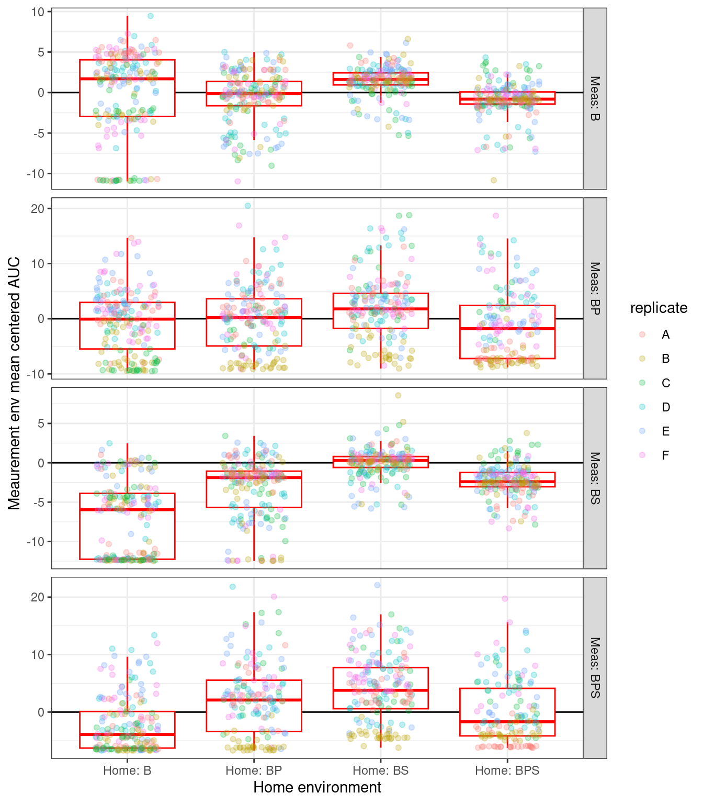
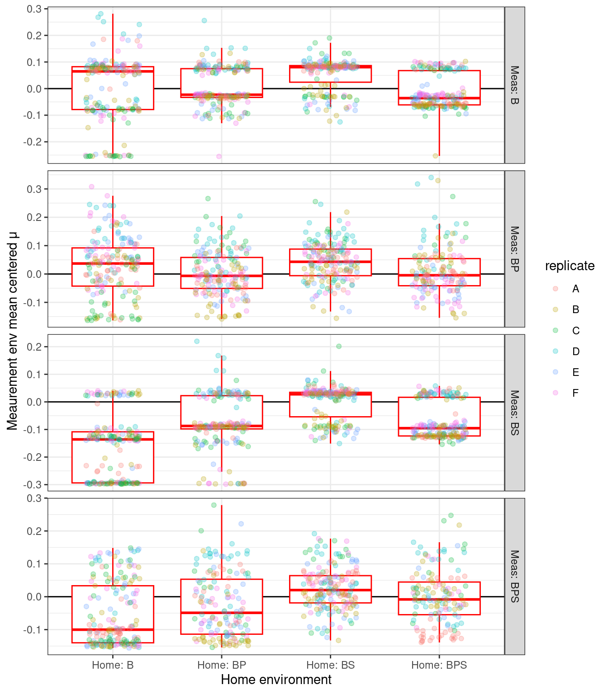

── Conflicts ────────────────────────────────────────── tidyverse_conflicts() ──
✖ dplyr::filter() masks stats::filter()
✖ dplyr::lag() masks stats::lag()
ℹ Use the conflicted package (<http://conflicted.r-lib.org/>) to force all conflicts to become errors
data_raw <- here::here("_data_raw", "monocultures", "20230112_clone_phenotyping")data <- here::here("data", "monocultures", "20230112_clone_phenotyping")# make processed data directory if it doesn't existfs::dir_create(data)
cloneplot <-function(df, metric, ylab){ df %>%filter(metric == {{ metric }}) %>% ggplot2::ggplot() + ggplot2::geom_hline(yintercept =0) + ggplot2::geom_boxplot(aes(y = z, x = home_env_short), color ="red", outliers =FALSE, position =position_dodge(width =0.5)) + ggplot2::geom_jitter(aes(y = z, x = home_env_short, color = replicate), width =0.25, height =0, alpha =0.25) + ggplot2::labs(x ="Home environment", y = ylab, fill="") + ggplot2::facet_grid(measure_env_short ~ ., scales ="free_y") + ggplot2::theme_bw()}pclone_auc <-cloneplot(auc_gr_md_subset_summary_z, "z_auc", "Meaurement env mean centered AUC")pclone_mu <-cloneplot(auc_gr_md_subset_summary_z, "z_mu", "Meaurement env mean centered μ")

Figure 1: Mean centered AUC (area under the growth curve) for 32 randomly picked clones from each replicate (A-F) of each home YSK environment and measurement condition pair. Points are individual measurements (colored by replicate) while boxplots represent the mean and 1-3 quartiles with whiskers representing 1.5 \(\times\) the interquartile range. Heavy black line is the Measurement Environment mean.

Figure 2: Mean centered maximum specific growth rate (μ max) for 32 randomly picked clones from each replicate (A-F) of each home YSK environment and measurement condition pair. Points are individual measurements (colored by replicate) while boxplots represent the mean and 1-3 quartiles with whiskers representing 1.5 \(\times\) the interquartile range. Heavy black line is the Measurement Environment mean.